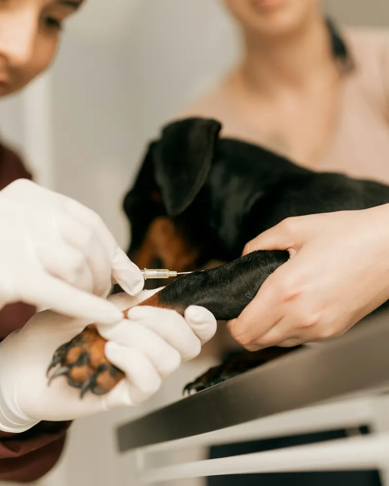
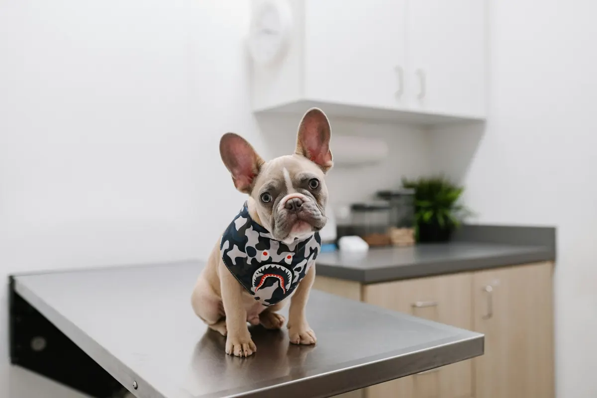
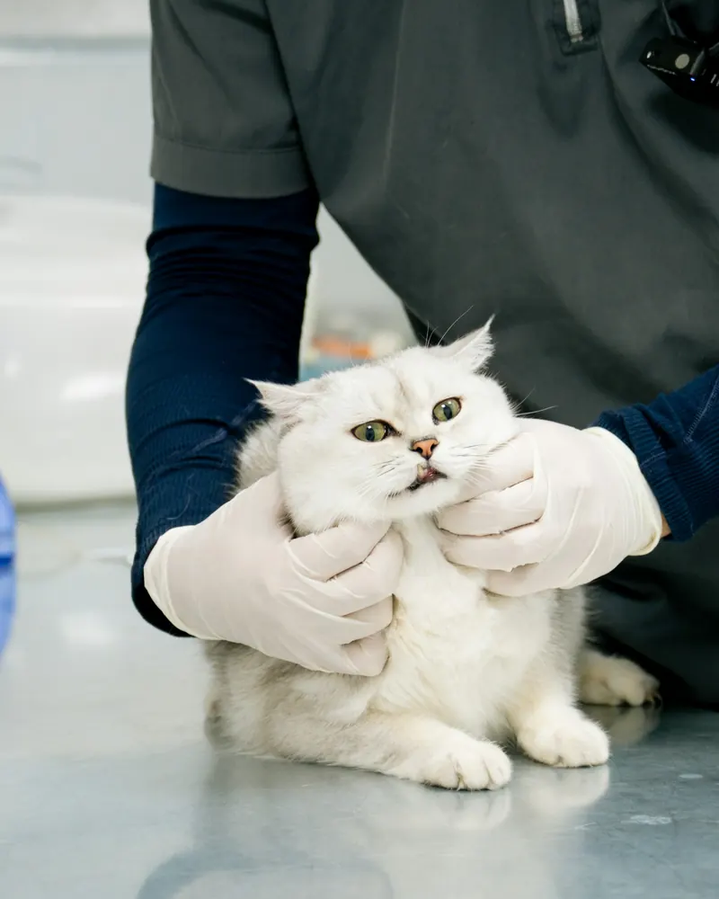
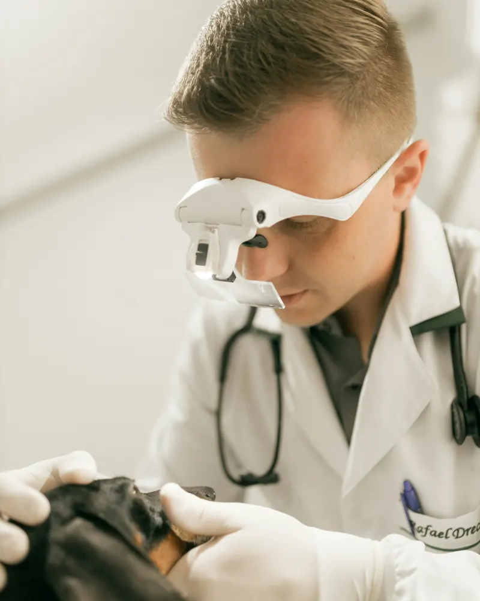
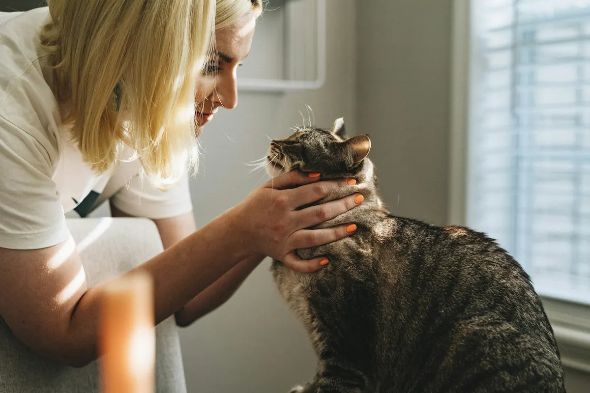
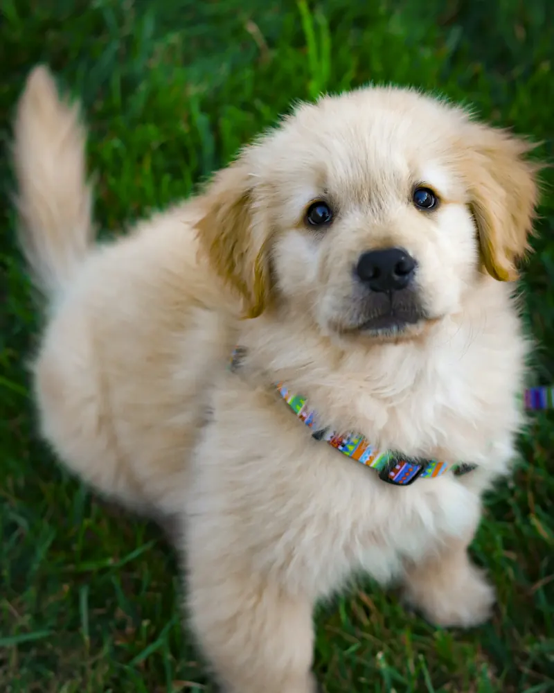

Profilaktyka
Pełen zakres szczepień i ochrona przed pasożytami, żeby do leczenia w ogóle nie dochodziło.
- szczepienia psów, kotów i królików
- ochrona przed kleszczami i pchłami
- okresowe odrobaczanie
- blokada cyklu płciowego
Od pierwszego szczepienia szczeniaka po zabieg chirurgiczny. Diagnozujemy, leczymy i doradzamy, jak zapobiegać.


Pełen zakres szczepień i ochrona przed pasożytami, żeby do leczenia w ogóle nie dochodziło.

Diagnozowanie i leczenie chorób:
Skóra i sierść: od świądu po przewlekłe stany zapalne.

Zdrowe zęby to mniej bólu i lepszy apetyt.

Zabiegi planowe i pomoc po urazach.

Uszy, nos i gardło oraz opieka nad ciężarną suką lub kotką.
Kilka drobiazgów, dzięki którym wizyta pójdzie sprawniej.
Zadzwoń, ustalimy termin i powiemy, jak przygotować zwierzę.